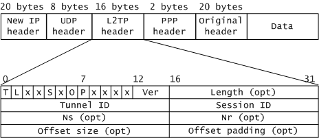

L2TP的控制消息和数据消息使用相同的报文头。
L2TP报文头中标记为可选（opt）的字段，是指在数据消息中可选，在控制消息中则是必选的。
| 字段 | 长度 | 描述 |
|---|---|---|
| T | 1比特 | 类型（Type），取值为“0”时表示数据消息，取值为“1”时表示控制消息。 |
| L | 1比特 | 长度在位标志，取值为“1”时表示报文头中存在长度字段Length。控制消息中必须为“1”。 |
| x | 1比特 | 保留位 |
| S | 1比特 | 顺序字段在位标志，取值为“1”时表示报文头中存在Ns和Nr字段。控制消息中必须为“1”。 |
| O | 1比特 | 取值为“1”时表示报文头中存在offset size字段。控制消息中必须为“0”。 |
| P | 1比特 | 优先级（Priority），只用于数据消息。控制消息中必须为“0”。 |
| Ver | 4比特 | 版本号，对于L2TPv2协议取值为“2”。 |
| Length | 16比特 | 消息的总长度，单位为字节。 |
| Tunnel ID | 16比特 | 隧道标识符，只具有本地意义。Hello控制消息具有全局性，其Tunnel ID必须为0。 |
| Session ID | 16比特 | 会话标识符，只具有本地意义。 |
| Ns | 16比特 | 当前消息的顺序号。 |
| Nr | 16比特 | 希望接收的下一条控制消息的顺序号。数据消息中是保留字段。 |
| Offset size | 16比特 | 偏移值，指示载荷数据开始的位置。 |
| Offset padding | 16比特 | 填充位。 |
| 标准 | 描述 |
|---|---|
| RFC 2661 | Layer Two Tunneling Protocol "L2TP" |